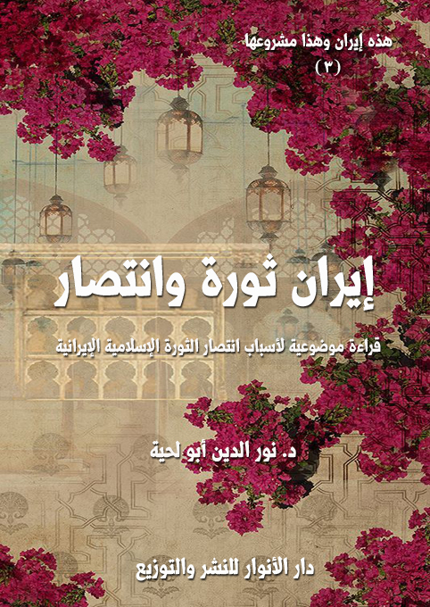

تحميل السلسلة بصيغة مصورة : PDF
تحميل السلسلة بصيغة نصية: DOCX
تحميل جميع كتب المؤلف بصيغة مصورة : PDF
تحميل جميع كتب المؤلف بصيغة نصية: DOCX
إيران ومشروعها
سلسلة علمية تنويرية حول الجمهورية الإسلامية الإيرانية، ورد الشبهات التي يبثها الإعلام المغرض عنها.
إيران.. دين وحضارة
التعريف بالكتاب
يحاول هذا الكتاب ـ من خلال الأدلة والوثائق الكثيرة ـ إثبات جانبين مهمين في إيران عبر مسيرتها التاريخية، وواقعها الحالي، وهما:
أولا ـ بيان أن الإيرانيين مسلمون منذ الفتح الأول، لم يتزحزحوا عن إسلامهم شعرة واحدة، وأن إسلامهم كان صادقا كما أخبر رسول الله صلى الله عليه وآله وسلم، وأنهم لم يتآمروا على الإسلام بتحريف أحكامه، ولا على المسلمين بإعلان الحرب عليهم، كما يزعم المغرضون.
وذكرنا في الكتاب الكثير من التجليات والشواهد والبراهين الدالة على ذلك، ابتداء من اهتمامهم بالقرآن الكريم قراءة وتفسيرا وتفعيلا في كل جوانب الحياة.. ومثله اهتمامهم بسنة رسول الله صلى الله عليه وآله وسلم بحسب ما وصلت إليهم نصوصها، وأنهم لأجل ذلك مؤمنون بعقائد الإسلام، ومنفذون لشرائعه، ومتحلون بقيمه الأخلاقية والروحية والحضارية، ما استطاعوا إلى ذلك سبيلا.
ثانيا ـ بيان أن إيران لم تتمسك بدينها تمسكا أنانيا، احتكرته لنفسها، وإنما راحت تستعمل كل الوسائل لخدمة الإسلام والمسلمين ابتداء من القرن الأول، حيث كانت أرضها منبعا لكل العلوم الإسلامية، ومحلا لتدريسها والكتابة فيها.
ففيها ظهرت أكبر تفاسير القرآن الكريم، وأكثر مجامع السنة النبوية، ومعظم ما كتب في العقيدة والفقه والأخلاق والعرفان، وكل العلوم العقلية والكونية.
وفيها كانت المدارس التي نشأ فيها كبار العلماء، وتتلمذت فيها أجيال طويلة من المسلمين، الذين استقر بهم الإسلام، وامتد في الأرض، لينشر هداية الله، ويلبس في كل عصر اللباس الذي يتناسب معه.
إيران.. نظام وقيم
التعريف بالكتاب
يحاول هذا الكتاب التعريف بالقيم الكبرى التي يقوم عليها النظام الإيراني، وذلك من خلال العناوين التالية:
ولاية الفقيه.. والحكومة الإلهية: ويتناول الأسس التي تقوم عليها نظرية الحكم في إيران، والتي يطلق عليها [ولاية الفقيه]، والتي تستند إلى مبدأ [الحاكمية الإلهية]
ولاية الفقيه.. وقيم الجمهورية: وفيه حديث مفصل عن الآليات التي وفرها النظام الإيراني حتى يعبر بها الشعب عن إرادته ومواقفه، حتى لا يصطدم النظام الشرعي بالرفض الشعبي.
ولاية الفقيه.. والحرية المنضبطة: وفيه حديث مفصل عن مدى الحرية المتاحة للإيرانين، كما ذكرنا القيود المفروضة على الحرية السلبية حفاظا على السلم والقيم الاجتماعية.
ولاية الفقيه.. والأخوة الإنسانية: وتناولنا فيه اهتمام النظام الإسلامي الإيراني بقيمة [الأخوة]، سواء الأخوة الداخية، أو الأخوة الخارجية مع جميع شعوب العالم.
ولاية الفقيه.. والمساواة العادلة: وتناولنا في قيمة [المساواة] باعتبارها من القيم التي قام عليها النظام الإسلامي الإيراني، وهي قيمة تجعل المواطنين في درجة واحدة، ودون تفريق بينهم، لا في الحقوق، ولا في الواجبات، إلا ما اقتضته العدالة.
ولاية الفقيه.. والقيم التربوية: وتناولنا فيه اهتمام النظام الإيراني بالقيم التربوية بجميع أصنافها، وفي جميع مجالاتها، ذلك أن هدف هذا النظام هو بناء الإنسان، وتحقيق ما يطلق عليه [التقوى الاجتماعية]
ولاية الفقيه.. والقيم الحضارية: وتناولنا فيه اهتمام النظام الإيراني بالدعوة لقيام حضارة إسلامية جديدة، تستند إلى القيم الإسلامية، والمصادر الدينية، في نفس الوقت الذي لا تغفل فيه المكتسبات المادية، والخبرات البشرية.
إيران.. ثورة وانتصار
|
الكتاب: إيران ثورة وانتصار
الوصف: قراءة موضوعية لأسباب انتصار الثورة الإسلامية الإيرانية
السلسلة: هذه إيران وهذا مشروعها
المؤلف: أ.د. نور الدين أبو لحية
الناشر: مؤسسة العرفان للثقافة الإسلامية
الطبعة: الأولى، 1440 هـ
عدد الصفحات: 357
صيغة: PDF
صيغة: DOCX
للمطالعة: هنا
|
لمطالعة الكتاب من تطبيق مؤلفاتي المجاني وهو أحسن وأيسر: هنا

التعريف بالكتاب
هذا ليس كتابا في تاريخ الثورة الإيرانية، ولا في تفاصيل أحداثها، وإنما هو محاولة للتعرف على أسرار انتصارها، باعتبارها نموذجا مثاليا لم يحدث مثله في التاريخ.
وهو يستند في تحليلاته واستنباطاته بالدرجة الأولى لقادة الثورة أنفسهم، ذلك أنهم أولى من يتحدث عن الثورة، وهم أعرف بها من غيرهم، ومن الخطأ الكبير الذي وقع فيه بعض المؤرخين لهذه الثورة تجاوزهم لأولئك القادة، وتطبيقهم لتفكيرهم الرغبوي عليها.
وهو لذلك يهدف إلى القراءة الموضوعية والعميقة للثورة الإسلامية، ورد كل الشبه التي استهدفتها، واستعملت كل الوسائل لتشويهها، منذ انطلاقتها وإلى الآن.
وهو أيضا قراءة اعتبارية لهذه الثورة بناء على الرؤية القرآنية لسنن النصر في الثورات، عساها تصحح تلك الأخطاء الكثيرة التي وقعت فيها الثورات العربية، نتيجة عدم استفادتها من تلك العبر، وهو ما جعلها تنحرف عن مسارها، أو تنهزم هزيمة نكراء، أو تتحول إلى أداة من أدوات الحرب الناعمة لضرب الأمن والاستقرار.
إيران.. والقرآن
|
الكتاب: إيران والقرآن
الوصف: جهود الإيرانيين في خدمة القرآن الكريم وعلومه قبل الثورة وبعدها
السلسلة: هذه إيران وهذا مشروعها
المؤلف: د. نور الدين أبو لحية
الناشر: دار الأنوار للنشر والتوزيع
الطبعة: الأولى، 1442 هـ
عدد الصفحات: 370
الكتاب موافق للمطبوع
صيغة: pdf
صيغة: docx
للمطالعة: هنا
|
لمطالعة الكتاب من تطبيق مؤلفاتي المجاني وهو أحسن وأيسر: هنا

يهدف هذا الجزء من سلسلة [هذه إيران.. وهذا مشروعها] إلى أمرين، كليهما مما يدعو إليه العلم والشرع والأخلاق:
أولهما: الرد على تلك الهجمات الشرسة التي ترمي الجمهورية الإسلامية الإيرانية بأنها صاحبة مشروع فارسي أو مجوسي أو صفوي، وأنها بذلك لا علاقة لها بالإسلام، ولا بمصادره.
وهي تهمة خطيرة يستدعي التكليف الشرعي وجوب تفنيدها وردها من أبواب كثيرة أولها نصرة المسلم لأخيه المسلم، وعدم غمط الناس حقوقهم، والشهادة بالحق، وعدم كتمان العلم.. والمعاني الكثيرة التي غابت للأسف عند مثيري أمثال هذه الشبهات، بدليل جهلهم المطبق بكل التراث العلمي الإيراني، القديم منه والحديث.
وثانيهما: التعريف بما أنتجته إيران طيلة تاريخها في خدمة القرآن الكريم، حتى يكون ذلك حلقة وصل بينها وبين غيرها من البلاد الإسلامية، والتي يسعى الأعداء للتفريق بينها وبينهم.
ولذلك لم نقتصر في هذا الكتاب على العرض الموجز للتراث الإيراني المرتبط بالقرآن الكريم وعلومه، وإنما عرفنا بكل عمل من الأعمال، وبينا منهجه ومزاياه، ليكون ذلك فرصة لتحقيق التواصل بين الباحثين، كما كان ذلك واقعا قبل الهجمة الإعلامية والدينية الشرسة التي حاولت فصل إيران عن دورها المرجعي والمركزي في العالم الإسلامي..
الكتاب: قيم الحضارة الإسلامية الجديدة
الوصف: قيم الحضارة الإسلامية الجديدة عند الإمام الخميني والإمام الخامنئي
السلسلة: هذه إيران وهذا مشروعها
المؤلف: أ. د. نور الدين أبو لحية
الناشر: دار الأنوار للنشر والتوزيع
الطبعة: الأولى، 1442 هـ
عدد الصفحات: 565
صيغة: PDF
صيغة: DOCX
للمطالعة: هنا
لمطالعة الكتاب من تطبيق مؤلفاتي المجاني وهو أحسن وأيسر: هنا

التعريف بالكتاب
يحاول هذا الكتاب أن يدخل في لباب التجربة الحضارية الإيرانية الجديدة وروحها، حتى لا تظل محصورة في تلك الأرض الطيبة والشعب الكريم، وإنما تعم العالم أجمع بداية بالعالم الإسلامي.
ذلك أن المقصود الأول من الثورة الإسلامية الإيرانية ـ كما يذكر قادتها ـ هو أن تكون بداية لنهضة جديدة للعالم الإسلامي، بل لكل المستضعفين في الأرض.
وهي بذلك تستحق أن تُدرس من هذه الناحية بعيدا عن الخصوصية الزمانية والمكانية المرتبطة بها؛ فالمشروع الحضاري الإيراني له وجهان:
1. وجه يراه الناس جميعا من خلال المقاومة والسيادة والعزة والتطور العلمي والتقني والفني وغيرها من النواحي التي يقر بها كل صادق يتابع الواقع الإيراني.
2. ووجه خفي، هو تلك الروح السامية، وذلك الفكر النبيل، الذي كان سببا وراء كل تلك النواحي الجميلة والسامية التي تحققت للإيرانيين.
وغرض هذا الكتاب ليس الوجه الأول؛ ذلك أنه لا يمكن حصره، ولا الحديث عنه، فالتطور يسير في إيران في وتيرة متسارعة، لا يمكن حدها ولا حصرها، ولو ذكرنا في الكتاب أي إحصائيات؛ فإنها ستصبح بعد سنوات قليلة مجرد أرقام لا قيمة لها أمام التطور الجديد.
ولذلك كان الأجدى هو البحث عن الوجه الثاني، لا للتعرف من خلاله على سبب ما يحدث في الوجه الأول فقط، وإنما للاستفادة منه في خدمة كل من يرغب في مشروع جاهز أثبت صلاحه من خلال التجربة والواقع ولأجيال عديدة.
| | |